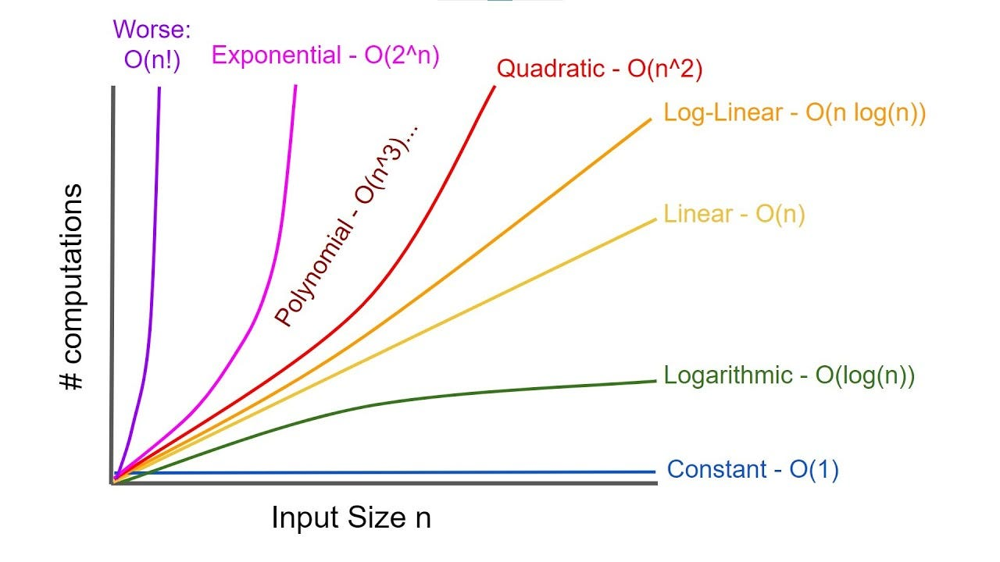

DAS
Table of Contents
[ Home ] \( \) | \( \) \( \) [text] \( \) \( \) | \( \) \( \) [link] \( \) \( \) | \( \) \( \) [title] \( \) \( \) | \( \) \( \) [icon] \( \) \( \) | \( \) \( \) [target] \( \) \( \) | \( \) \( \) [expanded] \( \) \( \)
Data Structure and Algorithm Intro
Definition: An algorithm is a finite sequence of instructions, each of
which has a clear meaning and can be performed with a finite amount of
effort in a finite length of time.[Alfred V.Aho]
Computational efficiency of Algorithm are greatly desireable
An Algorithm as described , is a sequence of finit instructions, executed by the computer
in order to obtain the desired output.
It manipulates Data which are stored in the memory of the computer, and this is done through Variables
Variable
Variable: A variable is a named location in a the computer memory, it holds data.
It can represent various types of information, such as numbers, text, or objects, and
its value can change during program execution.
Walkthough Variable: Variable consist of three parts
- Name of variable
- DataType of variable
- Value of variable
Before using variable we need to define,declare,inicilze
Note: For non primitive or custom variable we need to define the variable either
struct or object
| type | range | examples |
|---|---|---|
| int | Integer - ∞ to +∞ | 10 , +5 , - 2500 , -50 |
| float | real - ∞ to +∞ | 10.0055, - 3.14325, 2.5 e^12 |
| char | alphanumeric symbole | ‘a', ‘b', ‘Z', ‘#', ‘$' … ec |
| char[] | A sequence of character | “annaba”, “Algerie”, “karim” |
Data Structure
A collection of var, possible of several different data type, connected in various ways
A data structure is a way of organizing and storing data in a computer so that,
it can be accessed and used efficiently.
It refers to the logical or mathematical representation of data, as well as the implementation in a computer program.
The general Operation Performed on DataStructure are
- Insert:
- Access: iteration, Traverse
- Search:
- Delete
Abstract Data Type:
- Mathematical Model with collection of operation defined on model" [Aho]
- A abstraction of DataStructure which provides only interface to which Data Structure must adhere to
- Just Input-OUT Interface
- Does not specify how to implement
Complexity Analysis:
- Computation Time
- Computation Space (Memory: RAM)
Complexity Type:
- Big O :{Worst Case} Complexity that is going to be less or equal worst case
- Big \(\Omega\) :{Best Case} Complexity that is going to be less than best case.
- Big \(\Theta\) :{Average Case} COmplexity that is bounds the worst case and best case

Big O Notation
- An Upper Bound on the complexity in the worst case
- Helps to quantify performance as the input size \(n\) becomes large. \(\displaystyle{\lim_{n \to \infty}}\)
Definition: If the running time of a program T(\(n\)) is \(O\)(\(f\)(\(n\))),
there exist positive constants \(c\), \(n\)o such that
\(T\)(\(n\)) ≤ \(c\) \(f\)(\(n\)) ; ∀ \(n\) ≥ \(n\)o
Big O : describe the efficiency of alogirthum
\(O(1)\) < \(O\)( Log(\(n\)) ) < \(O(n)\) < \(O(nLog(n) )\) < \(O\)(\(n^2\)) < \(O\)(\(2^n\)) < \(O\)(\(n!\))
Big O Property
\(O\) (\(n\)+\(c\)) = \(O\)(\(n\))
\(O\) (\(cn\)) = \(O\) (n) ; \(c\) > 0
- Algorithim run time Complexity
Complexity Name Example O(1) Constant accessing a specific element in array O( Log(\(n\)) ) Logarithmic Find an element in sorted array O(\(n\)) Linear Loop through array element O(\(n\) Log(\(n\)) ) Linear Logarithmic Merge Sort Time Complexity O(\(n^2\)) Quadratic Looking a 2d-array at evey index O(\(2^n\)) Exponential Double recursion in Fibonacci O(\(n!\)) Factorial
When Big \(O\) is not Concern
- A rarely used program: do not over-optimize
- Better to write a quick dirty code and save time in writing/debugging
- When comprehensibilty is more important
- to be readable/maintainable by other
When Big \(O\) is concern:
- memory space, stability, accuracy.
Data Structures
Arrays
Arrays are two types
- Static Array (const size)
- Dynamic Array (size vary)
Static Array
class StaticArray: def __init__(self): self.sArray= ['apple','mango','pineapple'] def search (self,targe): for i in range(len(self.sArray)): if self.sArray[i]==targe: return i return -1 a = StaticArray() a.search('apple') # Complexity # Access O(1) # Search: O(n) # Insert: O(n) # Delete: O(n)
Dynamic Array
import ctypes # to create C type int array class DynamicArray: def __init__(self): self.size = 1 self.n = 0 # create a C type array with size -> self.size self.A = self.__make_array(self.size) def __len__(self): return self.n def append(self,item): # check if vacant if self.n == self.size: # array is full -> resize self.__resize(self.size*2) self.A[self.n] = item self.n = self.n + 1 def pop(self): if self.n == 0: return 'Empty List' print(self.A[self.n-1]) self.n = self.n - 1 def clear(self): self.n = 0 self.size = 1 def find(self,item): for i in range(self.n): if self.A[i] == item: return i return 'ValueError - not in list' def insert(self,pos,item): if self.n == self.size: self.__resize(self.size*2) for i in range(self.n,pos,-1): self.A[i] = self.A[i-1] self.A[pos] = item self.n = self.n + 1 def remove(self,item): # search and get pos pos = self.find(item) if type(pos) == int: # delete self.__delitem__(pos) else: return pos def __resize(self,new_capacity): # create a new array with new capacity B = self.__make_array(new_capacity) self.size = new_capacity # copy the content of old array to new one for i in range(self.n): B[i] = self.A[i] # reassign A self.A = B def __str__(self): result = '' for i in range(self.n): result = result + str(self.A[i]) + ',' return '[' + result[:-1] + ']' def __getitem__(self,index): if 0<= index < self.n: return self.A[index] else: return 'IndexError' def __delitem__(self,pos): # delete pos wala item if 0<= pos < self.n: for i in range(pos,self.n-1): self.A[i] = self.A[i+1] self.n = self.n - 1 def __make_array(self,capacity): # referential array(C type) return (capacity*ctypes.py_object)()
L = DynaticArray() L.append(1) L.append('hello') L.append(False) L.append(4.5) print(L) # >>> [1,False] L.remove(4.5) # >>> 'ValueError -not in List ' L = [10,20,30] L # >>> [10,20,30]
LinkedList
Single LinkedList
class Node: def __init__(self,value) : self.data =value self.next=None class SingleLinkedList: def __init_(self,node): self.head=node self.tail=node def access(self,i): node = self.head for j in range(i): node = node.next return node.data def search(self,target): node = self.head i =0 while node.next is not None: node = node.next if node.data==target: return i else: i += 1 return -1 def append(self,data): new_node = Node(data) self.tail.next = new_node self.tail=new_node def insert(self,newnode,i): if i <0: print("InputError:index less than zero") # 1. move to i-1 Node node = self.access(i-1) # 2. (i-1) th node should point to the newnode node.next=newnode.next # 3. newnode should point to the old ith node. node.next=newnode def print(self): node = self.head while node.next is not None: print(node.data, sep=', ') node = node.next
Double LinkedList
#code : # https://www.sanfoundry.com/python-program-implement-doubly-linked-list-provide-insertion-deletion-display-operations/ #C++ code https://gist.github.com/echo-akash/8543929a7fba6e22bffcf70cd7e65a7f class Node(object): def __init__(self, data, prev=None, next=None): self.data = data self.prev = prev self.next = next class DoubleList(object): head = None #(Node Null) tail = None #(Node Null) def append(self, data): if self.head is None: new_node = Node(data) self.head = self.tail = new_node else: # Double link tail(Node) to new_node (previous tail linked to new_node,) # # MAKE new_node (next) pointing to NULL new_node = Node(data,self.tail,None) self.tail.next = new_node # # Make new_node as tail(Node) self.tail = new_node def push(self,data): if self.head is None: new_node = Node(data) self.head = new_node self.tail = new_node else: # Double link new_node to tail(Node)(previous head linked to new_node,) new_node = Node(data,None,self.head) # new_node.next = self.head self.head.prev = new_node # # MAKE new_node (previous) pointing to NULL # new_node.prev = None # # make new_node as head self.head = new_node def insertAfter(self,given_node,data): # DoubleLink : new_node to NextNode(previous Node) if given_node.next is not None: # next node is not tail if given_node.prev is not None :# prev node is not head new_node = Node(data,,given_node.next) # new_node.next = prev_node.next given_node.next.prev = given_node else: # next node is tail self.tail = new_node # DoubleLink : prev_node to next prev_node.next = new_node new_node.prev = prev_node # def insertBefore(self,next_node,data): # new_node = Node(data) # #DoubleLink : new_node to next_node # new_node.next = next_node # if new_node.prev is not None: # new_node.prev.next = new_node # # def remove(self, node_value): current_node = self.head while current_node is not None: if current_node.data == node_value: # if it's not the first element if current_node.prev is not None: current_node.prev.next = current_node.next current_node.next.prev = current_node.prev else: self.head = current_node.next current_node.next.prev = None current_node = current_node.next def show(self): print ("Show list data:") current_node = self.head while current_node is not None: print (current_node.data,end=" <=> ") current_node = current_node.next print ( "\n" +"*"*50) def show_rev(self): print ("Show list data:") current_node = self.tail while current_node is not None: # print current_node.prev.data if hasattr(current_node.prev, "data") else None, print (current_node.data,end=" <=> ") # print current_node.next.data if hasattr(current_node.next, "data") else None current_node = current_node.prev print ( "\n" +"*"*50) d = DoubleList() d.append(5) d.append(6) d.append(50) d.append(30) d.show_rev() d.remove(50) d.remove(5) d.show()
Stack
class Node: def __init__(self,value): self.data = value self.next = None class Stack: def __init__(self): self.top = None def push(self, value): new_node = Node(value) new_node.next = self.top self.top = new_node def pop(self): if self.top is None: return "Stack Empty" else: data = self.top.data self.top = self.top.next return data def is_empty(self): return self.top == None def peek(self): if self.top is None: return "Stack Empty" else: return self.top.data def traverse(self): temp = self.top while temp is not None: print(temp.data,end=' ') temp = temp.next def size(self): temp = self.top counter = 0 while temp is not None: temp = temp.next counter+=1 return counter
Stack Using Array
class Stack: def __init__(self,size): self.size = size self.__stack = [None] * self.size self.top = -1 def push(self,value): if self.top == self.size - 1: return "Overflow" else: self.top+=1 self.stack[self.top] = value def pop(self): if self.top == -1: return "Empty" else: data = self.stack[self.top] self.top-=1 print(data) def traverse(self): for i in range(self.top + 1): print(self.stack[i],end=' ') s = Stack(3) s.stack # [4, 5, 6] s.push(4) s.push(5) s.push(6) s.pop() # 6 s.pop() # 5 s.pop() # 4 s.pop() # 'Empty' s.traverse() # 5 s.push(5)
Queues
class Node: def __init__(self,value): self.data = value self.next = None class Queue: def __init__(self): self.front = None self.rear = None def enqueue(self,value): new_node = Node(value) if self.front == None: self.front = new_node self.rear = new_node else: self.rear.next = new_node self.rear = new_node def dequeue(self): if self.front == None: return "Queue empty" else: self.front = self.front.next def is_empty(self): return self.front == None def front_item(self): if (not self.is_empty()): return self.front.data else: return "Empty queue" def rear_item(self): if (not self.is_empty()): return self.rear.data else: return "Empty queue" def traverse(self): temp = self.front while temp is not None: print(temp.data,end=' ') temp = temp.next q = Queue() q.enqueue(3) q.enqueue(4) q.enqueue(5) q.enqueue(7) q.traverse() q.dequeue() # 'Queue empty' q.enqueue(8) q.is_empty() # False q.front_item() # 4 q.rear_item() # 7 q.dequeue() #
TODO Tree
TODO Binary Tree
TODO Graph
Hashing
class Dictionary: def __init__(self, size): self.size = size self.slots = [None] * self.size self.data = [None] * self.size def put(self, key, value): hash_value = self.hash_function(key) if self.slots[hash_value] == None: self.slots[hash_value] = key self.data[hash_value] = value else: if self.slots[hash_value] == key: self.data[hash_value] = value else: new_hash_value = self.rehash(hash_value) while self.slots[new_hash_value] != None and self.slots[new_hash_value] != key: new_hash_value = self.rehash(new_hash_value) if self.slots[new_hash_value] == None: self.slots[new_hash_value] = key self.data[new_hash_value] = value else: self.data[new_hash_value] = value def get(self, key): start_position = self.hash_function(key) current_position = start_position while self.slots[current_position] != None: if self.slots[current_position] == key: return self.data[current_position] current_position = self.rehash(current_position) if current_position == start_position: return "Not Found" return "None wala Not Found" def __str__(self): for i in range(len(self.slots)): if self.slots[i] != None: print(self.slots[i],":",self.data[i],end=' ') return "" def __getitem__(self,key): return self.get(key) def __setitem__(self,key,value): self.put(key,value) def rehash(self, old_hash): return (old_hash + 1) % self.size def hash_function(self, key): return abs(hash(key)) % self.size
# Result hash(123) 123 abs(hash("python")) % 5 # 1 hash(1.5) # 115292150460684697 hash((1,2,3)) # 2528502973977326415 D1 = Dictionary(3) print(D1.slots) print(D1.data) # >>> # [None, None, None] # [None, None, None] D1['python'] = 56 D1['c'] = 1000 D1["dtjtr"] # 'None wala Not Found' print(D1) # >>> c : 1000 python : 56 D1[[[1,2,3]]] = "Hello" # TypeError D2 = {[1,2,3]:"Hello"} # TypeError
Hashing with LL
lass Node: def __init__(self,key,value): self.key = key self.value = value self.next = None class LL: def __init__(self): self.head = None def add(self, key, value): new_node = Node(key, value) if self.head == None: self.head = new_node else: temp = self.head while temp.next != None: temp = temp.next temp.next = new_node def delete_head(self): if self.head == None: return "Empty" else: self.head = self.head.next def remove(self, key): if self.head.key == key: self.delete_head() return if self.head == None: return "Empty" else: temp = self.head while temp.next != None: if temp.next.key == key: break temp = temp.next if temp.next == None: return "Not Found" else: temp.next = temp.next.next def traverse(self): temp = self.head while temp != None: print(temp.key,"-->",temp.value," ", end=" ") temp = temp.next def size(self): temp = self.head counter = 0 while temp != None: counter += 1 temp = temp.next return counter def search(self,key): temp = self.head pos = 0 while temp != None: if temp.key == key: return pos temp = temp.next pos += 1 return -1 def get_node_at_index(self,index): temp = self.head counter = 0 while temp is not None: if counter == index: return temp temp = temp.next counter+=1 class Dictionary: def __init__(self, capacity): self.capacity = capacity self.size = 0 # create array of LL self.buckets = self.make_array(self.capacity) def make_array(self,capacity): L = [] for i in range(capacity): L.append(LL()) return L def __setitem__(self,key,value): self.put(key,value) def __getitem__(self,key): return self.get(key) def __delitem__(self,key): bucket_index = self.hash_function(key) self.buckets[bucket_index].remove(key) def __str__(self): for i in self.buckets: i.traverse() return "" def __len__(self): return self.size def get(self,key): bucket_index = self.hash_function(key) res = self.buckets[bucket_index].search(key) if res == -1: return "Not Present" else: node = self.buckets[bucket_index].get_node_at_index(res) return node.value def put(self, key, value): bucket_index = self.hash_function(key) node_index = self.get_node_index(bucket_index, key) if node_index == -1: # insert self.buckets[bucket_index].add(key,value) self.size+=1 load_factor = self.size/self.capacity print(load_factor) if (load_factor >= 2): self.rehash() else: # update node = self.buckets[bucket_index].get_node_at_index(node_index) node.value = value def rehash(self): self.capacity = self.capacity * 2 old_buckets = self.buckets self.size = 0 self.buckets = self.make_array(self.capacity) for i in old_buckets: for j in range(i.size()): node = i.get_node_at_index(j) key_item = node.key value_item = node.value self.put(key_item,value_item) def get_node_index(self,bucket_index, key): node_index = self.buckets[bucket_index].search(key) return node_index def hash_function(self,key): return abs(hash(key)) % self.capacity
# Result L = [] for i in range(3): L.append(LL()) type(L[0]) # __main__.LL L = [LL()] * 3 L # >>> # [<__main__.LL at 0x7f9d693902b0>, # <__main__.LL at 0x7f9d693902b0>, # <__main__.LL at 0x7f9d693902b0>] L = LL() L.add(2,3) L.add(4,5) L.add(6,7) L.traverse() # >>> 2 --> 3 4 --> 5 6 --> 7 L.get_node_at_index(0).key # 2 D1 = Dictionary(3) D1.put("c",20000) # 0.3333333333333333 D1["java"] # 'Not Present' del D1["java"] D1.put("Java",56) # 0.5 D1 = Dictionary(4) D1.put("php",34) # 0.6666666666666666 D1["matlab"] = 45 # 1.0 print(D1) # php --> 34 matlab --> 45 c --> 20000 len(D1) # 3
Algorithms
- Recersive
- Search
- Sorting
Recersicve function
When to use Recursive ?
| point | Recursion | Iteration | Result |
|---|---|---|---|
| Space Effiecient ? | No | Yes | No stack memory required in case of interation |
| Time Effiecient ? | No | Yes | pop and push elements increase time |
| Easy to code ? | Yes | No | recursion is used especially when problem is sub divided into subproblem |
When to use/Avoid Recursion When to use it ?
- If we can easily breakdown a problem into similar subproblem
- When we are fine with extra overhead (both time and space) that comes with it
- When we need a quick working solution insted of efficient one
- When traverse a tree
- When we use memoization in recursion
When to avoid it ?
- If time and space complexity matters for us
- Recursion uses more memory.If we use embedded memory. For example an application that takes more memory in the phone is not efficient
- Recursions can be slow
When u desinging mobile app, quick solution (car air-bag) we don't used recursion
Fibonacci number
- Fibonacci series : 0,1,1,2,3,5,8,13,21,34
- Find ith element in Fibonaccia seriers
def fibonacci(n): assert n >=0 and int(n) == n, 'The number should be Non-Negative and Non-floting (int) number' if n in [0,1]: return n else: return fibonacci(n-1)+ fibonacci(n-2) print(fibonacci(7)) # 13
Factorial (n!)
- n ! = n * (n-1) * (n-2) * (n-3) * (n-4)……4 * 3 * 2 * 1
- 0! = 1
def factorial(n): assert n>=0 and int(n) ==n, 'The number must be positive intergeter' if n in [0,1]: # if n ==1 or n ==0: return 1 else: return n * factorial(n-1)
print(factorial(0)) # 1 print(factorial(1)) # 2 print(factorial(4)) # 24 # print(factorial(-1))
Sum of digit
### Find sum of digitals of a positive integer number using recursive # Logic sub_digit(n) = Reminder(n/10) + sum_digit(Question(n/10) def sum_digit(n): if n//10 ==0: print(F'n= {n} and sum({n}) ={n%10}') return n%10 else: print(F'n= {n} and sum({n}) = sum_digit({n//10}) +{n%10}') return sum_digit(n//10) + n%10 sum_digit(1234)
n= 1234 and sum(1234) = sum_digit(123) +4 n= 123 and sum(123) = sum_digit(12) +3 n= 12 and sum(12) = sum_digit(1) +2 n= 1 and sum(1) =1
10
power of a base number \({b}^{n}\)
Logic power(b,n) = power(b,n-1) * b
def power_base(b,n): assert int(n) ==n and b!=0 , 'n should be int and base should be non-zero' if n ==0 : return 1 if n ==1: return b else: return power_base(b,n-1)*b if n<0: return power_base(1/b,n) # return 1/power_base(b,-n)
TODO Hanoi Tower
Search
Binary Search
# Binary Search # Sorted Array def binary_search(arr, low, high, item): #print("low = ",low,"high = ",high,end=' ') if low <= high: # search mid = (low + high)//2 #print("mid value is",arr[mid]) if arr[mid] == item: return mid elif arr[mid] > item: return binary_search(arr, low, mid-1,item) else: return binary_search(arr,mid+1,high,item) else: return -1 arr = [12,24,35,46,57,68,80,99,100] print(binary_search(arr,0,len(arr)-1,-5)) # -1
Sorting
Linear Searching
# Linear Search # Brute Force def linear_search(arr,item): for i in range(len(arr)): if arr[i] == item: return i return -1 arr = [12,34,56,1,67,100,47,99] linear_search(arr,121) # -1 # Time Complexity is O(N) # No sorting required
Bubble Sort
def bubble_sort(arr): for i in range(len(arr) - 1): flag = 0 for j in range(len(arr) - 1 - i): if arr[j] > arr[j+1]: arr[j],arr[j+1] = arr[j+1],arr[j] flag =1 if flag == 0: break return arr arr = [23,12,34,11,100,56,78] bubble_sort(arr) # [11, 12, 23, 34, 56, 78, 100]
Quick Sort
def quick_sort(arr): if len(arr) <= 1: return arr pivot = arr.pop() items_left = [] items_right = [] for item in arr: if item < pivot: items_left.append(item) else: items_right.append(item) return quick_sort(items_left) + [pivot] + quick_sort(items_right) arr = [2,1,4,6,3,7,5] quick_sort(arr) # >>> [1, 2, 3, 4, 5, 6, 7]
def partition(arr,low,high): i = low - 1 pivot = arr[high] for j in range(low,high): if arr[j] <= pivot: i+=1 arr[i],arr[j] = arr[j],arr[i] arr[i+1],arr[high] = arr[high],arr[i+1] return i+1 arr = [10, 7, 8, 9, 1, 5] n = len(arr) quick_sort(arr, 0, n-1) print(arr)
Merge Sort
def merge_arrays(arr1,arr2): i = 0 j = 0 new_arr = [] while i arr1 = [1,2,6,7,8] arr2 = [2,3,5] merge_arrays(arr1,arr2) # [1, 2, 2, 3, 5, 6, 7, 8] def merge_sort(arr): mid = len(arr)//2 left = arr[:mid] right = arr[mid:] if len(left) == 1 and len(right) == 1: return merge_arrays(left,right) else: merge_sort(left) merge_sort(right) [2,5,1,6,4,7,9,0] left = [2,5,1,6] right = [4,7,9,0] merge sort on left left1 = [2,5] right1 = [1,6] merge on left1 left2 = [2] right2 = [5] # ERROR : Syntax Error
Selection
def selection_sort(arr): for i in range(len(arr) - 1): min = i for j in range(i+1,len(arr)): if arr[j] < arr[min]: min = j arr[i],arr[min] = arr[min],arr[i] return arr arr = [23,12,34,11,100,56,78] selection_sort(arr)
DONE Insertion Sort
Sleep Sort
# Sorting def is_sorted(arr): sorted = True for i in range(len(arr) - 1): if arr[i]>arr[i+1]: sorted = False return sorted arr = [1,2,3,4,8,6] is_sorted(arr) # False
Monkey Sort
# Monkey sort import random a=[1,2,3,4] random.shuffle(a) a # [2, 1, 3, 4] import time def monkey_sort(arr): while not is_sorted(arr): time.sleep(1) random.shuffle(arr) print(arr) print(arr) a = [12,24,11,56,34,20] monkey_sort(a)
# Result [24, 20, 11, 56, 12, 34] [11, 34, 12, 56, 20, 24] [20, 11, 24, 12, 34, 56] [24, 20, 34, 56, 11, 12] [56, 34, 12, 20, 11, 24] [34, 12, 11, 20, 56, 24] [56, 34, 20, 12, 11, 24] [11, 20, 34, 56, 24, 12] [24, 12, 11, 34, 56, 20] [20, 56, 11, 24, 34, 12] [56, 12, 24, 20, 11, 34] [56, 20, 24, 34, 11, 12] [56, 20, 24, 11, 34, 12] [56, 12, 24, 20, 34, 11] [11, 12, 20, 24, 34, 56] [11, 12, 20, 24, 34, 56] 12 24 45 5 16 5 12 16 24 45
Resource
Free Book : Data Structures and Algorithms By Alfred V. Aho
https://theswissbay.ch/pdf/Gentoomen%20Library/Data%20Structures/Data%20Structures%20and%20Algorithms%20-%20Alfred%20V.%20Aho.pdf
https://www.youtube.com/watch?v=f9Aje_cN_CY&t=35332s
https://github.com/campusx-official/dsa-using-python/tree/main